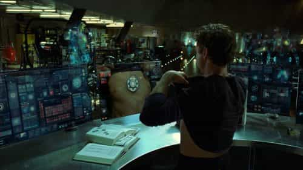
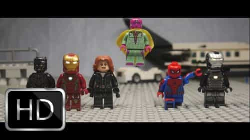
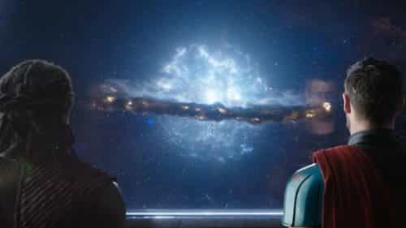

Jared is a middle-aged guy full of old-man wisdom. He's best described as a gentlemen scholar and a man among men. You can read his writing at his site: Legends of Men


The Marvel extended film universe began in 2007. Since then there have been 19 films, many of which are record-breaking, and nearly all of which make film critics cream their pants. Five of the movies grossed over $190 million in their opening weekend alone. Black Panther sits at 98% on Rotten Tomatoes. But all that really reflects is how much nerd culture has become mainstream.
The Marvel films are written and directed in a way that makes soy boys and nerds feel a sense of self-pleasure. When a man wants to ejaculate but doesn’t want to do the work of gaming women, he will masturbate to feel pleasure. The nerd version of this is to watch Marvel movies to feel good about their lives without putting forth the effort to better themselves. They live through the nerd fantasies that are in the films, and because the films are so popular, they feel a sense of validation to their nerd fantasies.
Here are four of those nerd fantasies that make nerds pleased with themselves…
Captain America starts off as a scrawny guy with health problems in the 1940s. He means well, and has a fighting spirit, but he doesn’t have the physicality to enlist to fight Nazis in the US Army. After trying to enlist, he gets sponsored to be part of an experiment. He’s injected with a serum and grows taller, gets large muscles, has excellent hand-eye coordination, and better physicality than the most elite athletes. The nerd fantasy is very blatant—weak men are heroic, they just need a serum to facilitate their heroism.
The masturbatory effect comes when nerds fantasize that they are like the scrawny Captain America before he gets the strength serum. They relate to the weak version of the hero and imagine that if they had a serum, they would be a superhero just like Captain America. The similarities between the nerds and weak original Captain America validate this belief. In that way, they get a sense of unearned pride.
Tony Stark is a billionaire genius who creates the Iron Man suit and the software that makes it work. He’s a jerk, though not the sort of jerk that’s tolerable. At first, he is seen with many beautiful women, a sort of ladies man. He’s also seen as somewhat suave with strangers, a good salesman.
Tony Stark’s main and only power is that he designs software and hardware. Before becoming Iron Man, he designed weapons and made a lot of money selling his weapons to governments. Then he used his software writing powers to design the Iron Man suit and become a hero.
Nerds love to relate to Tony Stark. They write computer software just like he does, meaning they have the same “superpower,” but they’re also anti-social know-it-alls just like Stark. The fantasy appears when they see their heroic software developer with billions of dollars and beautiful women.

These nerds know they can work hard and be more fit, groomed, and talented like the fictional character, but that takes too much effort. Instead, they get good feelings from watching Stark get the acclaim, just like when guys masturbate they get good feelings from watching some other man take a mound to pound town.
In nearly every Marvel movie, the heroes fight each other. There’s very little suspense in these fights because we know nothing significant can come from them. The entire Captain America: Civil War movie was just superheroes fighting but pausing to compliment each other. They were never going to kill each other. It was a child’s play-fight.

More than anything, it reminded me of Star Wars nerds reenacting light saber battles. The Marvel superhero movies are the same way. When nerds watch the superheroes play fight, it reminds them of their light saber “battles” and they feel like their lame activities aren’t so lame after all.
Captain America took a serum to get his strength and that was enough to beat the bad guys, but when the heroes’ innate strengths aren’t enough to beat the bad guys, what do they do? In a good hero story (not a superhero story), when the hero isn’t good enough, he improves. He makes himself better until he is able to defeat the bad guy. Marvel superheroes don’t do that. Most commonly they recruit more heroes. Why improve when you can recruit?
In Avengers: Age of Ultron, the heroes aren’t good enough to beat the bad guys. They know it, but they do nothing about it. Luckily for the good guys, two of the bad guys defect and Tony Stark uses his software powers to make a new superhero. That does the trick.
In Thor: Ragnarok, Thor can’t beat the bad guys (Cate Blanchett). Does Thor work hard to gain more strength to beat her? Of course not. He destroys his home with her in it.

The latest offender is Avengers: Infinity Wars. Thanos is the bad guys. Nobody can beat him, but none of them really better themselves in an attempt to beat him either. Instead, they lose to him. The movie’s sequel will be resolved when a new good guy (Captain Marvel) is recruited to beat the bad guy.
The message to nerds is simple: if there’s a challenge you face, don’t rise to the occasion and solve the problem, just call for help. They already do this, but seeing it on film makes them feel good about their (lack of) actions.
Nerds do none of the things they can do to be more like superheroes. They don’t work out or groom themselves or learn how to fight. But that’s the masturbatory aspect of these films. They make nerds feel good about themselves without the nerds having to work for anything. That’s the real reason these movies are so successful.
For more from Jared Trueheart on the roles of men and women in literature and film check out his writing at Legends of Men.
Read More: Liberals Petition Marvel For A Homosexual Captain America